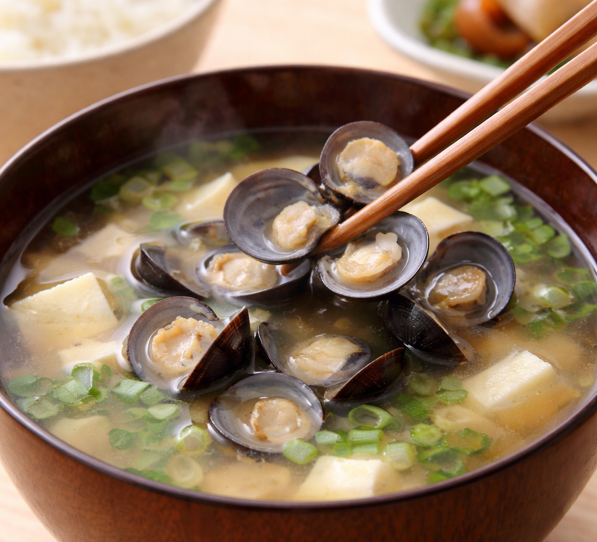
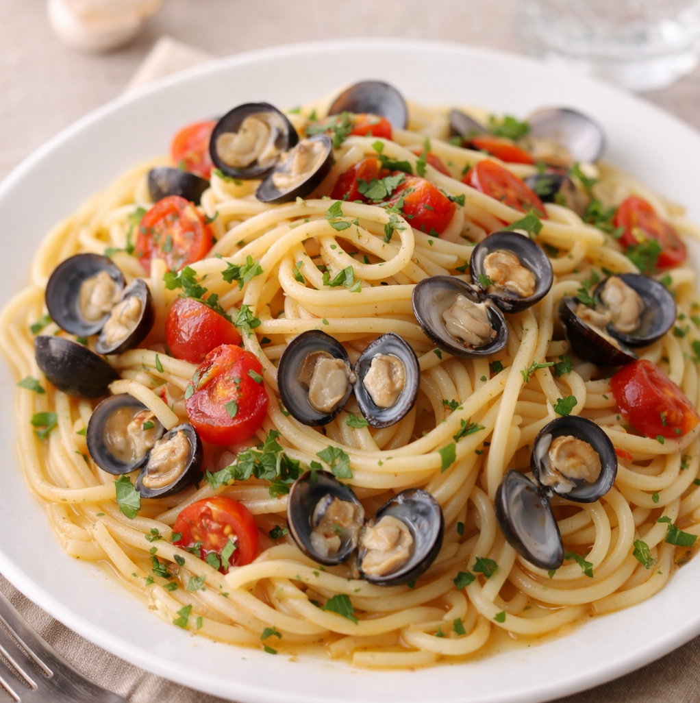
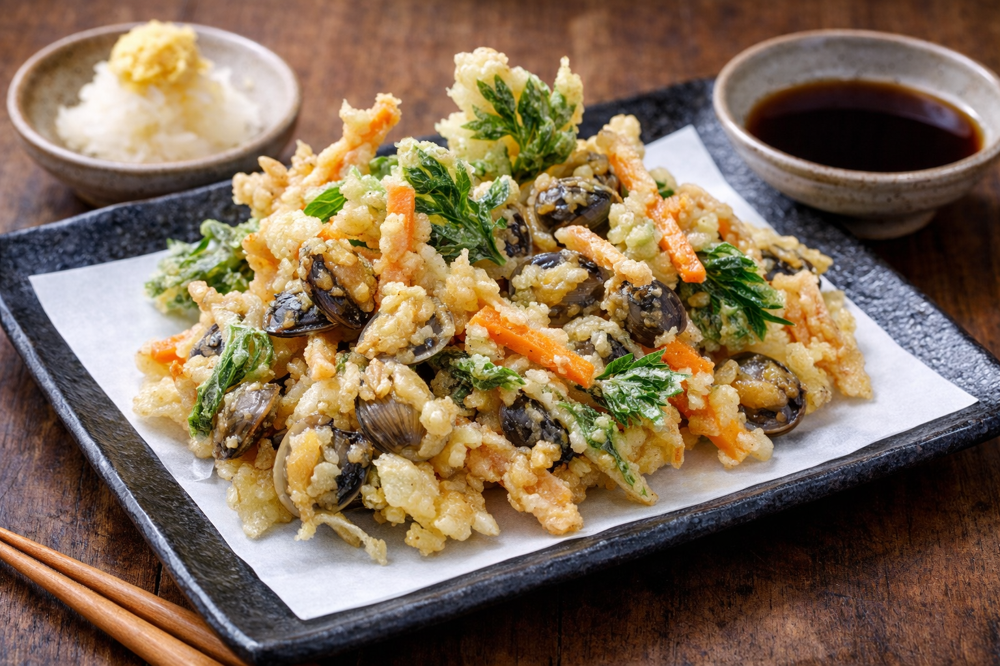
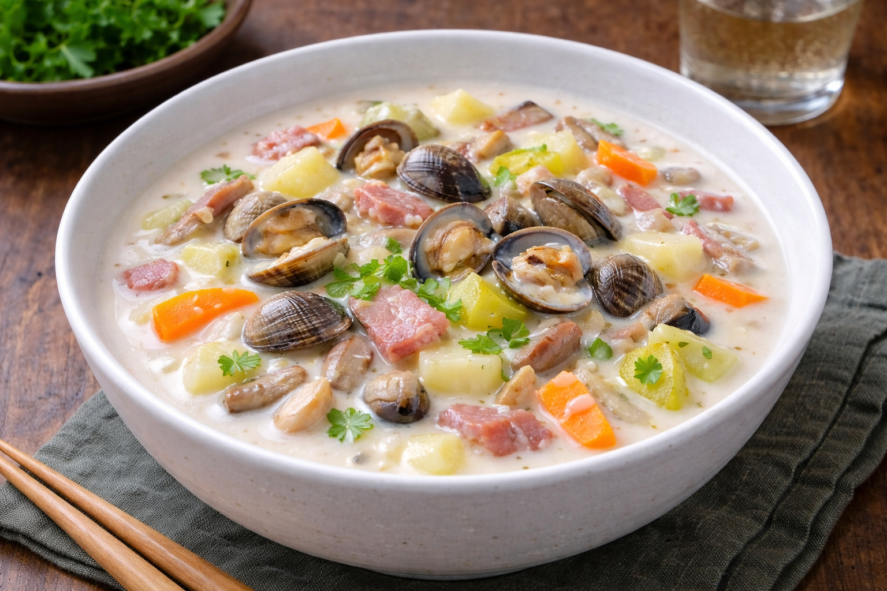

Рецепты
Подборка блюд, в которых раскрывается вкус Corbicula japonica

Мисо-суп с Моллюсками
Лёгкий суп на каждый день

Мисо-суп с Моллюсками
Лёгкий суп на каждый деньИнгредиенты (на 4–5 порций):
300–500 г моллюсков шиджими (очищенных от песка, свежих или замороженных)
4 стакана воды (около 1 л)
3–4 ст. ложки мисо-пасты по вкусу
2–3 ст. ложки саке (по желанию)
2 стебля зелёного лука
Молотый японский перец саншо по вкусу
Приготовление:
1. Тщательно промойте моллюски под холодной водой, при необходимости удалите песок.
2. Выложите моллюсков в кастрюлю, добавьте воду и саке, поставьте на средний огонь и доведите до кипения.
3. Когда моллюски начнут открываться и суп закипит, сразу уменьшите огонь до минимального и аккуратно снимите пену.
4. Если используются замороженные моллюски и они плохо открываются, проварите их дополнительно 1–2 минуты.
5. Снимите кастрюлю с огня, растворите мисо-пасту в небольшом количестве горячего бульона и верните её в кастрюлю, не доводя суп до кипения.
6. Разлейте суп по мискам, посыпьте мелко нарезанным зелёным луком и при желании добавьте немного молотого перца саншо.

Спагетти с Моллюсками
Простой вариант пасты с морепродуктами

Спагетти с Моллюсками
Простой вариант пасты с морепродуктамиИнгредиенты (на 1 порцию):
80 г спагетти
200 г моллюсков (очищенных)
1/4 крупного спелого помидора
Немного чеснока
Немного красного перца чили
1 ст. ложка оливкового масла
1 ст. ложка растительного масла
1 ст. ложка белого вина
Соль и чёрный перец по вкусу
Немного рубленой петрушки
Приготовление:
1. Очистите помидор от кожуры, удалите семена и нарежьте мякоть мелкими кубиками. Чеснок мелко измельчите. У красного перца чили удалите плодоножку и семена, промойте его под проточной водой.
2. В воке или глубокой сковороде разогрейте оливковое и растительное масло, добавьте чеснок и красный перец чили и обжаривайте на среднем огне, помешивая, до появления выраженного аромата.
3. Добавьте моллюсков и нарезанные помидоры, слегка обжарьте, затем сбрызните белым вином, накройте крышкой и тушите, пока моллюски полностью не откроются.
4. Отварите спагетти до состояния al dente, добавьте их к моллюскам и аккуратно перемешайте, чтобы паста впитала бульон и соус. Приправьте солью и чёрным перцем по вкусу.
5. Выложите пасту в сервировочную миску, полейте оставшимся соусом и посыпьте рубленой петрушкой.

Плов из Моллюсков
Рис с моллюсками и овощами
Плов из Моллюсков
Рис с моллюсками и овощамиИнгредиенты (на 1 порцию):
2 стакана риса
600 г пресноводных моллюсков
2 1/2 стакана воды + бульон из моллюсков
2 ст. ложки белого вина
1 упаковка грибов шимеджи
1/4 луковицы, мелко нарезанной
1 зубчик чеснока, измельчённый
1 спелый помидор или 100 г консервированных помидоров
1 1/2 ст. ложки растительного масла
1 ст. ложка сливочного масла
4/5 ст. ложки соли (по вкусу)
Немного чёрного перца
Немного рубленой петрушки
Приготовление:
1. Тщательно промойте рис под холодной водой и откиньте на дуршлаг, чтобы стекла лишняя жидкость.
2. Выложите моллюсков в кастрюлю, добавьте белое вино и готовьте на слабом огне до тех пор, пока раковины не откроются. Достаньте мясо моллюсков, бульон процедите и сохраните.
3. Оставьте часть моллюсков в раковинах для украшения готового блюда.
4. У грибов шимеджи удалите нижние части ножек, крупные грибы разрежьте на 2–3 части. Помидор очистите от кожуры, удалите семена и нарежьте мякоть кубиками.
5. В кастрюле разогрейте растительное и сливочное масло, добавьте лук и чеснок и обжаривайте до мягкости и появления аромата. Добавьте рис и продолжайте обжаривать, пока зёрна не станут прозрачными.
6. Влейте 2,5 стакана горячей воды и бульон из моллюсков, добавьте грибы шимеджи, помидоры, соль и чёрный перец. Варите до готовности риса.
7. Добавьте очищенные моллюски, накройте крышкой и прогрейте блюдо на пару несколько минут.
8. Выложите плов в сервировочную миску, украсьте моллюсками в раковинах и посыпьте рубленой петрушкой.
Совет: вместо грибов шимеджи можно использовать свежие шиитаке или другие ароматные грибы - блюдо получится не менее вкусным.

Жареные Моллюски с Овощами
Быстрое блюдо с зеленью и моллюсками
Жареные Моллюски с Овощами
Быстрое блюдо с зеленью и моллюскамиИнгредиенты (на 3 порции):
200 г моллюсков шиджими (очищенных от песка)
Зелёные овощи (комацуна, бок-чой, шпинат и др.)
1 зубчик чеснока
1/2 помидора
2 ст. ложки саке
Соевый соус по вкусу
Около 2 щепоток соли
Приготовление:
1. Подготовьте ингредиенты: нарежьте зелёные овощи на кусочки удобного размера, чеснок мелко нарежьте, помидор крупно нарежьте.
2. Разогрейте сковороду с небольшим количеством масла, добавьте чеснок и обжаривайте на среднем огне до появления аромата.
3. Добавьте моллюсков и стебли зелёных овощей, которые готовятся дольше, влейте саке и накройте сковороду крышкой.
4. Когда моллюски откроются, добавьте листья зелени и помидоры, быстро обжарьте и приправьте соевым соусом и солью по вкусу. Подавайте сразу.
Совет: при обжаривании не перемешивайте блюдо слишком активно палочками — моллюски могут выскочить из раковин. Лучше слегка встряхивать сковороду или аккуратно перемешивать деревянной лопаткой.

Суши с Моллюсками
Домашние суши без лишних сложностей
Суши с Моллюсками
Домашние суши без лишних сложностейИнгредиенты:
3 стакана риса
1,5 кг моллюсков
2 яйца
100 г зелёной фасоли
1/3 моркови (около 50 г)
Небольшой кусочек свежего имбиря
Красный сливовый уксус
Приготовление:
1. Тщательно промойте рис под холодной водой и откиньте на дуршлаг.
2. Выложите моллюсков в кастрюлю, добавьте 1/4 стакана саке и готовьте до тех пор, пока раковины не откроются. Процедите через дуршлаг, отделите мясо и сохраните бульон.
3. Отварите около 150 г мяса моллюсков в 1/4 стакана бульона из моллюсков, добавив 2 ч. ложки мирина и 1 ст. ложку тёмного соевого соуса. Снимите с огня и дайте настояться.
4. Яйца приправьте сахаром и небольшим количеством соли, обжарьте тонкими слоями и нарежьте полосками, сформировав мягкий яичный омлет.
5. Стручковую фасоль отварите, нарежьте тонкими диагональными ломтиками, затем протушите на слабом огне в 2/3 стакана бульона даси с 1 ст. ложкой мирина и 2/3 ч. ложки соли. Остудите.
6. Морковь нарежьте полосками длиной около 2 см и тушите в 2/3 стакана бульона даси с 1 ст. ложкой мирина и чуть больше 1 ч. ложки светлого соевого соуса.
7. Сварите рис, используя бульон из моллюсков и добавив 3 1/4 стакана воды.
8. Приготовьте рис для суши: смешайте 3 ст. ложки уксуса, 1 ст. ложку сахара и 1 ч. ложку соли, аккуратно вмешайте в горячий рис. Выложите рис в миску и добавьте подготовленные ингредиенты.
9. Свежий имбирь нарежьте тонкими ломтиками, опустите в горячую воду и подавайте вместе с красным сливовым уксусом.

Жареные Моллюски По-Китайски
Простое блюдо в азиатском стиле
Жареные Моллюски По-Китайски
Простое блюдо в азиатском стилеИнгредиенты:
500 г моллюсков шиджими
Немного чеснока
Немного свежего имбиря
1–2 стебля зелёного лука
1 ст. ложка соевого соуса
1 ст. ложка устричного соуса
1–2 ст. ложки шаосинского вина (или японского саке)
Растительное масло по вкусу
Паста из бобов чили по вкусу
Приготовление:
1. Мелко нарежьте чеснок, имбирь и зелёный лук.
2. Хорошо разогрейте вок, добавьте большое количество масла и прокалите его, затем слейте масло. Снова добавьте около 2 ст. ложек масла, выложите чеснок, имбирь, половину зелёного лука и пасту из бобов чили и обжаривайте до появления яркого аромата.
3. Добавьте моллюсков, быстро обжарьте, затем накройте крышкой и тушите на слабом огне, пока раковины не откроются.
4. После того как моллюски откроются, добавьте соевый соус, устричный соус и шаосинское вино (или саке), аккуратно перемешайте и прогрейте ещё короткое время.
5. Подавайте блюдо горячим, разложив по мискам и посыпав оставшимся зелёным луком.

Темпура из Моллюсков
Хрустящая закуска из моллюсков

Темпура из Моллюсков
Хрустящая закуска из моллюсковИнгредиенты (на 4 персоны):
500 г моллюсков шиджими
1/2 корня лопуха (около 70 г)
20 г моркови
1/2 пучка мицубы
Кляр: 1 стакан пшеничной муки, 4/5 стакана отварного бульона из моллюсков, 1 яйцо
Приготовление:
1. Приготовьте моллюсков на пару с добавлением саке, выньте мясо из раковин, а бульон процедите и сохраните для кляра.
2. Очистите корень лопуха, замочите его в воде, чтобы убрать горечь, затем нарежьте соломкой. Морковь нарежьте тонкой соломкой, мицубу нарежьте кусочками длиной около 4 см.
3. В миске слегка взбейте яйцо, добавьте бульон из моллюсков и пшеничную муку, аккуратно перемешайте до получения лёгкого кляра.
4. Разогрейте масло для фритюра до температуры около 170 °C. Обмакните подготовленные ингредиенты в кляр и обжаривайте небольшими порциями до лёгкой золотистой корочки.
5. Подавайте темпуру сразу после жарки, дополнив тёртым дайконом (предварительно отжав лишнюю жидкость), посыпав тёртым имбирём и добавив немного соевого соуса.

Охлажденный Cливочный Cуп с Моллюсками
Лёгкий холодный суп для тёплого дня
Охлажденный Cливочный Cуп с Моллюсками
Лёгкий холодный суп для тёплого дняИнгредиенты (на 4–5 человек):
400 г моллюсков шиджими
2 стакана воды
1 картофелина (около 100 г)
1/2 большой луковицы (около 150 г)
1/2 моркови (около 50 г)
10 г сельдерея
1 зубчик чеснока
20 г сливочного масла
1 ст. ложка муки
1 стакан молока
1/2 стакана жирных сливок
Соль и чёрный перец по вкусу
Мелко нарезанный зелёный лук для подачи
Приготовление:
1. Выложите моллюсков в кастрюлю, добавьте воду и нагрейте до тех пор, пока раковины не откроются. Достаньте мясо моллюсков, бульон процедите и сохраните.
2. В другой кастрюле растопите сливочное масло, добавьте мелко нарезанный чеснок и обжаривайте до появления аромата. Затем добавьте тонко нарезанные лук, морковь и сельдерей и готовьте на слабом огне, не допуская изменения цвета овощей. Добавьте нарезанный картофель.
3. Когда картофель начнёт размягчаться, посыпьте овощи мукой и обжаривайте 1–2 минуты, помешивая.
4. Влейте бульон из моллюсков, тщательно соскребая дно кастрюли деревянной лопаткой. Доведите до кипения, приправьте солью и перцем и тушите на слабом огне 15–20 минут.
5. Снимите с огня, измельчите суп в блендере до однородной консистенции, затем верните в кастрюлю и при необходимости дополнительно приправьте солью.
6. Перелейте суп в миску и полностью охладите в холодильнике.
7. Перед подачей добавьте молоко и сливки, хорошо перемешайте и снова охладите. Разлейте суп по тарелкам, сверху выложите мясо моллюсков и посыпьте мелко нарезанным зелёным луком.

Маринованные в Соевом Соусе Моллюски По-тайваньски
Сытный суп с овощами и моллюсками
Маринованные в Соевом Соусе Моллюски По-тайваньски
Сытный суп с овощами и моллюскамиИнгредиенты (на 2 порции):
200 г моллюсков шиджими (очищенных от песка)
40 мл воды
1 зубчик чеснока
1 перец чили «орлиный коготь»
Смесь приправ:
70 мл шаосинского вина (или саке)
50 мл соевого соуса
2 ч. ложки сахара
Немного кунжутного масла
Приготовление:
1. Мелко нарежьте чеснок. У перца чили удалите семена и нарежьте его тонкими кусочками.
2. В небольшой миске смешайте все ингредиенты для маринада.
3. Выложите моллюсков в сковороду, добавьте воду, накройте крышкой и готовьте на пару. Когда моллюски откроются и станут прозрачными, выключите огонь и дайте им дойти на остаточном тепле, не снимая крышку.
4. После полного остывания переложите моллюсков вместе с выделившимся соком в миску с маринадом и оставьте мариноваться примерно на 6 часов в холодильнике.
5. Подавайте охлаждёнными как закуску к напиткам.

Молочный Суп из Моллюсков с Овощами
Удобная закуска к напиткам

Молочный Суп из Моллюсков с Овощами
Удобная закуска к напиткамИнгредиенты (на 5 порций):
200 г моллюсков шиджими (очищенных от песка)
2 средние картофелины
3 листа капусты
1 пучок грибов шимеджи
3 ломтика бекона
1 средняя морковь
1 средняя луковица
20 г сливочного масла
2 ст. ложки муки
2 стакана воды
300 мл молока
2 ст. ложки белого вина
Приготовление:
1. Нарежьте все овощи кубиками, грибы шимеджи разделите на небольшие пучки, бекон нарежьте кусочками шириной около 1 см.
2. В кастрюле растопите сливочное масло, добавьте лук, морковь, картофель, бекон и капусту и обжаривайте на среднем огне до лёгкой мягкости.
3. Добавьте муку и обжаривайте, помешивая, до тех пор, пока она не перестанет выглядеть порошкообразной.
4. Влейте воду и варите на слабом огне, помешивая, пока овощи не станут мягкими, следя, чтобы суп не пригорел.
5. Добавьте молоко, доведите до кипения, затем приправьте солью и чёрным перцем по вкусу.
6. В отдельной сковороде выложите моллюсков, добавьте белое вино и готовьте их на пару до открытия раковин. Добавьте моллюсков вместе с выделившимся соком в кастрюлю с супом, аккуратно перемешайте и при необходимости скорректируйте вкус.
Совет: добавляйте моллюсков в самом конце приготовления — если положить их раньше, суп может потемнеть.